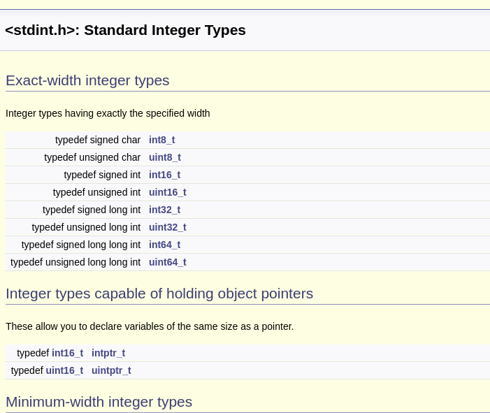
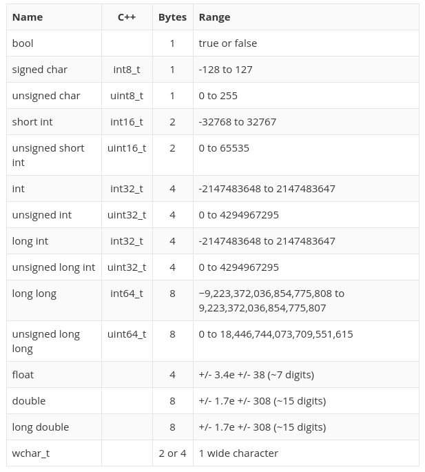

Morse.h
#define DOT 300
#define DASH 900
class Morse
{
public:
Morse(int pin);
const String MORSE_LUT[26] = { ".-", "-...", "-.-.", "-..", ".", "..-.", "--.", "....", "..", ".---", "_._", ".-..", "--", "-.", "---", ".--.", "--.-", ".-.", "...", "-", "..-", "...-", ".--", "-..-", "-.--", "--.."};
void char_to_morse(char c);
private:
int _pin;
void signal(int duration);
};
Morse.cpp
Morse::Morse(int pin)
{
pinMode(pin, OUTPUT);
_pin = pin;
}
void Morse::signal(int duration)
{
digitalWrite(_pin, HIGH);
delay(duration);
digitalWrite(_pin, LOW);
delay(duration);
}
void Morse::char_to_morse(char c){
String morse_code = MORSE_LUT[c-'a'];
for (int i = 0; i < morse_code.length(); i++){
if (morse_code[i] == '.') signal(DOT);
else signal(DASH);
}
}
Wat is een pointer
Een pointer is een variabele dat een geheugen locatie bevat van andere
elementen in de code. Een pointer kan de adressen van volgende elementen bevatten
- Een adres
- Variabelen
- Functies
- Pointers
Geheugen is adresseerbare blok bits!
Wat is een pointer
- Zorgt voor efficiëntere code
- Verhoogt de complexiteit
- Pointers hangen nauw samen met arrays
- Pointer hangt niet vast aan een datatype (void *pointer)
Wat is een pointer

Pointers Declaren
int number = 10;
int *pointer = &number;
Je wijst een adres toe aan een pointer

Pointer Operators
- Adres &
- Met & vraag je het adres op van een variable
- Dereferencing *
- Met * vraag je de achterliggende data op, * ook de indirection operator genoemd.
Pointer Voorbeelden
| Declaratie |
Value |
Adres |
| int Val = 2 |
2 |
54428 |
| int *pVal = &Val |
54428 |
97880 |
| int secVal = *pVal |
2 |
97932 |
| *pVal = 5 |
5 |
54428 |
| pVal = pVal + 1 |
54444 (+16) |
97880 |
Dus ...
- int *p = &c
- De pointer p wijst naar het locatie van c
- int k = *p
- k is gelijk aan de achterliggende data van p
- *p = 0
- De achterliggende data = 0
- *j = *p
- De achterliggende data van j is gelijk aan de achterliggende data van p
Oefening
- Declareer 3 integers x, y en z met de respectievelijke waardes 1, 5, 155
- Declareer 3 pointers p_x, p_y, p_z die verwijzen naar de geheugen locaties van x,y,z
- Print de waardes af van de achterliggende data van de pointers als ook de locaties
Swap Functie
- Het volgende stuk code swap de variabelen niet
- Er word een lokale kopie gemaakt
- Dit noemt Pass By Value
- De originele data word beschermt
void swap(int x, int y){
int tmp;
tmp = x
x = y;
y = tmp;
}
void main(void){
int a = 10;
int b = 13;
swap (a, b);
}
/*y == ? && z == ?*/

Pass By Reference
- De data wisselt tussen de variabelen
- Toegang tot de variabele is mogelijk door indirecte toegang
- Data moet niet gedupliceerd worden
- Pass By Reference
- Concept bestaat ook in andere programmeer talen
void swap(int *x, int *y){
int tmp;
tmp = *x
*x = *y;
*y = tmp;
}
void main(void){
int a = 10;
int b = 13;
swap (&a, &b);
}
/*y == ? && z == ?*/

Oefening
- Declareer 3 integers x, y en z met de respectievelijke waardes 1, 5, 155
- Schuif vanuit een functie de waarde x naar y, y naar z en z naar x
Volgorde van bewerkingen
- * en & hebben voorrang op rekenkundige operators
- *, &, ++ en -- hebben dezelfde priorieit
- * en & worden van rechts naar links geëvalueerd
- *p++ en (*p)++ zijn verschillend
- *p++ verhoogt het adres opgeslagen in p en haalt daarna de achterliggende data van het nieuwe adres op
- (*p)++ verhoogte de achterliggende data op adres p
Volgorde van bewerkingen
Veronderstel dat
- char c = 5
- char *p
- p = &c

Pointers & Arrays
- Arrays is een blok van dezelfde data types
- Het eerste element van een array kan beschouwd worden als een pointer van hetzelfde type
- Door het adres opgeslagen in de pointer te veranderen kunnen we volgende elementen aanspreken
- Elk array element wordt in opeenvolgende volgorde in het geheugen opgeslagen
int *p
int a[1O]
p = &(a[2]);
/*Dan klopt het volgende*/
*p = a[2];
*(p+ 1) = a[3];

Gevaren van pointers
- Rechtstreekse manipulatie van het geheugen
- Kent geen out of bounds
int a[1O]
int *p = &(a[0]);
int i = a[11] //error
int j = *(p + 15) //mogelijk
Datatypes zijn niet belangrijk (void *pointer)
Null Terminated C String
- In C worden alle char arrays getermineerd door '\0'
- char *x = "hello" == "hello\0"
- char x[4] = "hello" == "hello\0"
- Dit maakt het mogelijk om simpels char arrays te kunnen manipuleren
int strlen(char *s) /* added by RJH; source: K&R p99 */
{
int n;
for(n = 0; *s != '\0'; s++)
{
n++;
}
return n;
}
Lengte van een object
- Pointer is een adres
- Pointers geven niet altijd een lengte mee
- Functies mbt tot buffers hebben meestal beide nodig
void RF24::read(void *buf, uint8_t len)
bool RF24::write(const void *buf, uint8_t len)
De groote van een element - sizeof()
- sizeof returnt de grote in het aantal bytes
- sizeof(int) = 4
char data[10]="Hello World"
for (int i = 0; i < sizeof(data)/sizof(int); i++){
//dosomething
}
char data[10]="Hello World"
write(data, sizeof(data));
Strings
- Op een micrcontroller werkt men niet graag met string maar null terminated arrays
- Kijk zeker hier is: Werken met buffers
#include
void *memcpy (void *dest, const void *src, size_t len)
{
char *d = dest;
const char *s = src;
while (len--)
*d++ = *s++;
return dest;
}
Oefening
Schrijf een functie met pointers waar je een 2 arrays aan elkaar rijgt (concat)
Union
A union is a variable that may hold (at different) times objects of different
types and sizes, with the compiler keeping track of size and alignment requirements.
Unions provide a way to manipulate different kinds of data in a single
area of storage.
- acces
- union_name.member
- union-name.member
- Maar een datatype per moment mogelijk
- Alle datatypes gedeclareerd starten op dezelfde geheugen locatie
union my_data {
int value;
char bytes[sizeof(int)];
} this_data;
union my_data other_data
Union Voorbeeld
void setup(){
union {
unsigned short int vals_ints[3];
unsigned char vals_chars[sizeof(unsigned short int)*3+1];
} vals;
vals.vals_ints[0] = 1;
vals.vals_ints[1] = 2;
vals.vals_ints[2] = 0xccAA;
printf("Loc struct: %p\n",(void*) &vals);
printf("Loc 1: %p\n",(void*) &vals.vals_ints[0]);
printf("Loc 2: %p\n",(void*) &vals.vals_ints[1]);
printf("Loc 3:%p\n",(void*) &vals.vals_ints[2]);
printf("Loc Array: %p\n",(void*) &vals.vals_chars);
printf("Val 1: %d\n",vals.vals_ints[0]);
printf("Val 2: %d\n",vals.vals_ints[1]);
printf("Val 3: %d\n",vals.vals_ints[2]);
printf("Byte 1: %u\n",vals.vals_chars[0]); //unsigned short int is 2 bytes lang
printf("Byte 2: %u\n",vals.vals_chars[2]); //daarom 0 2 4 als index
printf("Byte 3: %x\n",vals.vals_chars[4]);
printf("Val array: %d\n",vals.vals_chars);
/*
*Let wel op de endianness, de integer word met litlle endianness opgeslagen
in het geheugen. Dit kan je zien met print van byte 3.
* */
}
void loop(){
}
/* OUTPUT
Loc struct: 0x7ffc295e2bd0
Loc 1: 0x7ffc295e2bd0
Loc 2: 0x7ffc295e2bd2
Loc 3:0x7ffc295e2bd4
Loc Array: 0x7ffc295e2bd0
Val 1: 1
Val 2: 2
Val 3: 52394
Byte 1: 1
Byte 2: 2
Byte 3: aa
Val array: 694037456
Union Gebruik
In het Arduino I2C Master Reader/Slave Writer Voorbeeld
Master Reader
#include <Wire.h>
const int MEMBERS = 3;
const int SIZE = sizeof(unsigned short int) * 3 + 1;
union {
unsigned short int vals_ints[MEMBERS];
unsigned char vals_chars[SIZE];
} vals;
void setup() {
Wire.begin();
Serial.begin(9600);
}
void loop() {
Wire.requestFrom(8,sizeof(unsigned short int)*3+1);
if (Wire.available() == SIZE) {
Wire.readBytes(vals.vals_chars, SIZE);
for (int i = 0; i < MEMBERS; i++) Serial.println(vals.vals_ints[i]);
}
delay(500);
}
Slave Sender
#include
const int MEMBERS = 3;
const int SIZE = sizeof(unsigned short int) * 3 + 1;
union {
unsigned short int vals_ints[MEMBERS];
unsigned char vals_chars[SIZE];
} vals;
vals.vals_ints[0] = 0;
vals.vals_ints[1] = 1;
vals.vals_ints[2] = 2;
void setup() {
Wire.begin(8);
Wire.onRequest(requestEvent);
}
void loop() {
delay(100);
}
void requestEvent() {
Wire.write(vals.vals_chars);
}
Typedef
- Creeren van nieuwe datatypes
- Makkelijke toegang voor structs, unions
- Creeren van architectuur afhankelijke code
Zonder Typedef
union my_data {
int value;
char bytes[sizeof(int)];
} this_data;
union my_data other_data
Met Typedef
type_def union my_unions {
int value;
char bytes[sizeof(int)];
} my_union;
my_union this_data
my_union other_data
Typedef - Architectuur afhankelijke code
Standaard Int Definities AVR (8bit)

Source
Standaard Int Definities Raspberry Pi (32bit)

Source